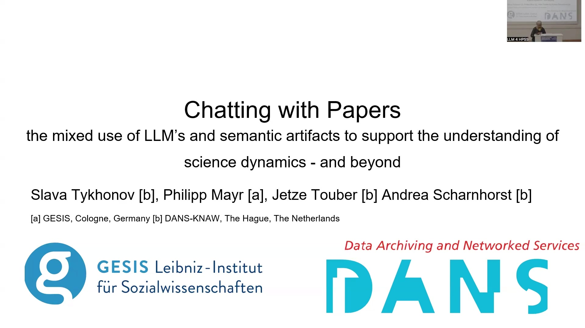
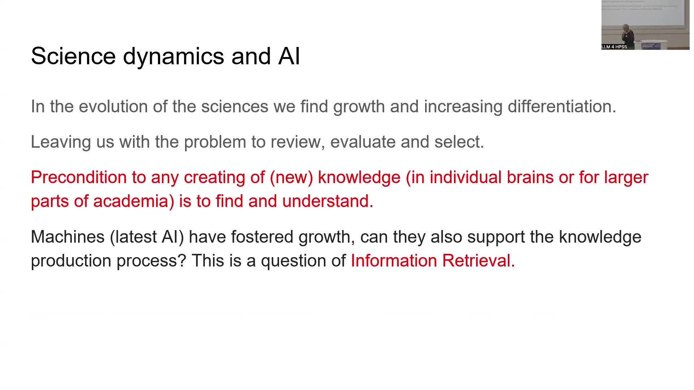
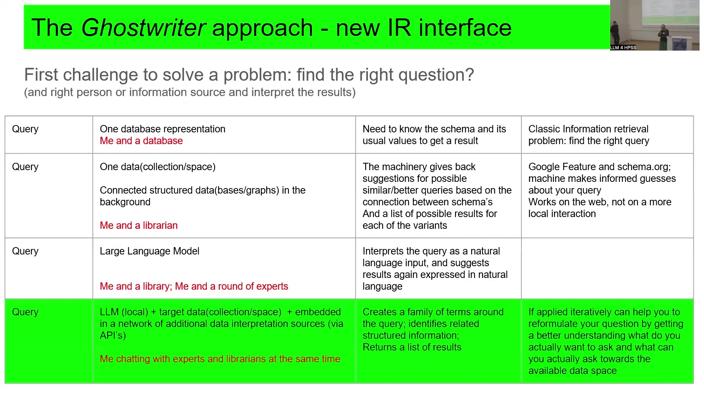
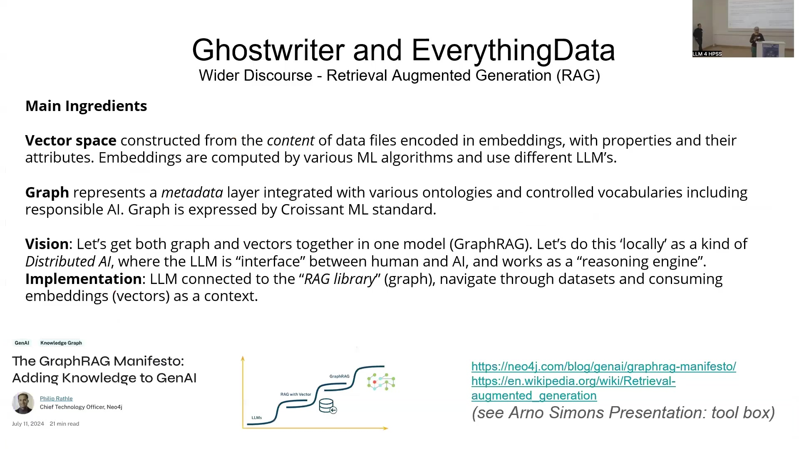
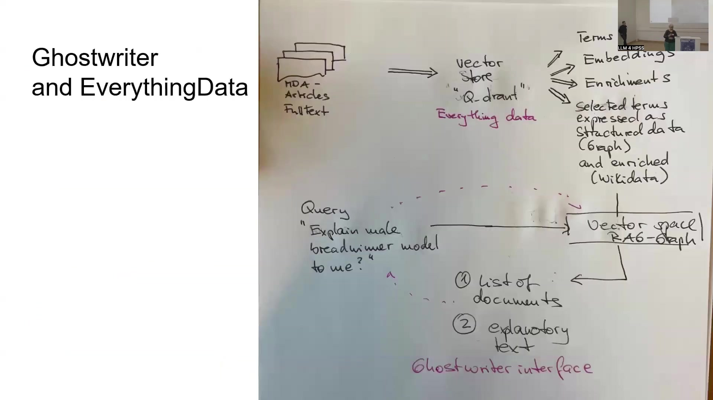
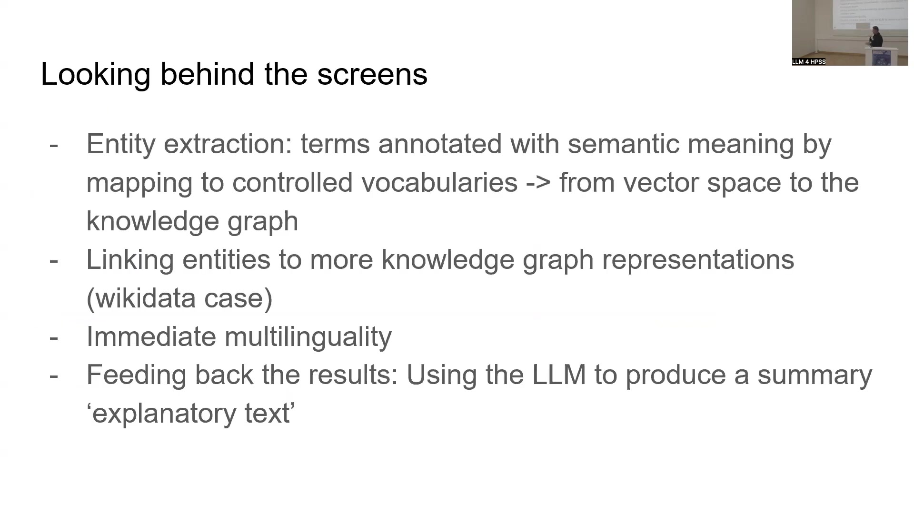
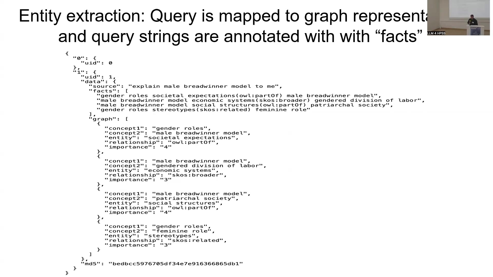

11 Science Dynamics and AI
Overview
Researchers at DANS, the data archive of the Royal Netherlands Academy of Arts and Science, and GESIS, a prominent research institute, have pioneered an innovative AI-driven solution. This system directly addresses the pervasive challenge of information overload within scientific research. Their primary objective centred on crafting a system that enables users to ‘chat with papers’ from a carefully curated collection, specifically focusing on articles from the method-data-analysis (mda) journal.
This ambitious endeavour harnesses sophisticated data processing pipelines, collectively termed EverythingData. These pipelines encompass meticulous term extraction, precise embedding generation, and the efficient utilisation of a Qdrant vector store. Central to this architecture is the Ghostwriter interface, which elegantly facilitates natural language interaction with the processed documents. The underlying methodology draws heavily upon Retrieval Augmented Generation (RAG), seamlessly integrating vector spaces with knowledge graphs, notably Wikidata, to significantly enhance contextual understanding and factual accuracy. This approach, inspired by concepts such as GraphRAG, employs a local, one-billion-parameter Large Language Model (LLM) as both a reasoning engine and an intuitive interface; Gemma3 specifically handles translation tasks.
The system’s architecture meticulously splits papers into identifiable blocks, links entities to knowledge graphs for robust grounding, and inherently supports multilingual queries. Initial tests, conducted on a collection of 100 mda articles, compellingly demonstrate the system’s capacity to deliver factual, referenced answers. Crucially, it explicitly states when information is absent, thereby preventing hallucinations, and readily permits iterative query refinement. Moreover, this work proposes a novel methodology for creating LLM benchmarks by decoupling knowledge into Wikidata identifiers, thus paving the way for more sustainable and verifiable AI in scientific knowledge production.
11.1 Context: Science Dynamics, Information Overload, and AI

This exploration into AI’s pivotal role in science dynamics stems from a collaborative endeavour between DANS, the data archive of the Royal Netherlands Academy of Arts and Science, and GESIS, a research-active archive. Whilst DANS primarily focuses on data archiving, GESIS also conducts extensive research. The initiative originated from the profound experimentation of Slava Tikhonov, a senior research engineer at DANS, who has meticulously developed intricate data processing pipelines—complex systems aptly characterised by Arno Simons as a ‘tangle of interwoven components’.
Modern sciences evolve with remarkable rapidity and increasing differentiation. This trajectory, however, poses a significant challenge: how can researchers effectively review, evaluate, and select pertinent information from an ever-expanding corpus? Consequently, scholars confront a veritable ‘flood of information’. The ability to locate and comprehend existing knowledge forms a fundamental precondition for creating new insights, whether by individuals or broader academic communities. A central question thus emerges: can machines, particularly the latest AI technologies that have paradoxically contributed to this information proliferation, also assist in the knowledge production process itself? This chapter investigates this crucial question through the lens of Information Retrieval, aiming to elucidate complex AI solutions comprehensively via a practical use case.
11.2 Research Objectives and System Introduction: Ghostwriter and EverythingData

Investigators pursued a specific research question: could they construct an AI solution enabling users to interact conversationally with a selected collection of academic papers? To address this, they developed a system comprising two primary components, internally designated Ghostwriter and EverythingData. Ghostwriter functions as the user-facing interface, whilst EverythingData encompasses the intricate array of backend processes.
This chapter introduces foundational concepts such as Information Retrieval, human-machine interaction, and the Retrieval-Augmented Generation (RAG) technique in generative AI. Subsequently, it details the compelling use case involving the method-data-analysis (mda) journal. A core segment elucidates the workflow underpinning this ‘local’ or ‘tailored’ AI solution, providing illustrations of both front-end and back-end operations, before concluding with a summary and outlook.
11.3 The Ghostwriter Interface: A Novel Information Retrieval Approach

Researchers conceptualise the Ghostwriter system as a novel interface for Information Retrieval. Its design philosophy draws inspiration from Slava Tikhonov’s insightful metaphors, which distinguish between two modes of interaction: ‘talking to the librarian’ and ‘talking to the expert’. The ‘librarian’ symbolises engagement with structured data, knowledge organisation systems, and pre-existing classifications. Conversely, the ‘expert’ represents interaction through natural language.
Crucially, the Ghostwriter interface enables users to converse with both these symbolic entities simultaneously. This capability rests upon a local Large Language Model (LLM) operating on a target data collection, which is further embedded within a network of supplementary data interpretation sources accessible via APIs. This innovative approach seeks to overcome the classic Information Retrieval challenge, where users often require prior knowledge of a database’s schema and typical values to formulate effective queries and obtain optimal results.
11.4 Theoretical Framework: Retrieval Augmented Generation (RAG) with GraphRAG

The system’s development firmly situates itself within the broader scientific discourse of Retrieval Augmented Generation (RAG). For a comprehensive introduction to this topic, particularly the integration of knowledge graphs, readers are highly encouraged to consult Philip Rattliff’s seminal paper, ‘GenAI Knowledge Graph The GraphRAG Manifesto: Adding Knowledge to GenAI’ (Neo4j, 11 July 2024). Arno Simons also merits acknowledgement for his significant contributions in this domain, particularly concerning the RAG ‘tool box’.
This RAG approach fundamentally comprises three main ingredients. Firstly, researchers construct a vector space from the content of data files, encoding them as embeddings that meticulously capture properties and their attributes; various Machine Learning algorithms and diverse LLMs compute these embeddings. Secondly, a graph forms a metadata layer, seamlessly integrating with diverse ontologies and controlled vocabularies, including those pertinent to responsible AI, and is expressed using the Croissant ML standard. The overarching vision, termed GraphRAG, aims to unify these graph and vector components within a single model. Developers plan to implement this ‘locally’, conceptualising it as a form of Distributed AI where the LLM serves as both an ‘interface’ between human and AI and a ‘reasoning engine’. In practice, the LLM connects to a ‘RAG library’ (representing the graph), navigates datasets, and consumes embeddings (the vectors) to provide essential context for its operations.
11.5 System Workflow: From Document Ingestion to Query Response

The system processes information through a clearly defined workflow, commencing with a collection of input documents. For demonstration purposes, researchers utilised articles from the mda journal, scraping a small number, though any document collection can serve as input. These documents first enter the EverythingData backend, where a series of sophisticated operations transform them. Initially, the system ingests information into a vector store, employing Qdrant for this purpose. Subsequent operations include meticulous term extraction, the construction of precise embeddings, and various enrichments. Notably, selected terms become structured data within a graph, further enriched by linking to external resources such as Wikidata. This coupling with knowledge graphs proves crucial, as it significantly enhances the value of words, phrases, and embeddings by adding layers of contextualisation.
All processed data then populates a ‘vector space RAG-Graph’, which forms the core reasoning substrate. When a user poses a question in natural language via the Ghostwriter interface, this query directly interacts with the vector space RAG-Graph. In response, the system delivers not only a list of relevant documents, typical of conventional information retrieval systems, but also a generated summary or explanatory text that the underlying ‘machinery’ deems pertinent to the user’s question. An accompanying diagram from TheAidedge.io compellingly illustrates the comparative roles of vector and graph databases within RAG architectures.
11.6 Implementation and Use Case: Interacting with MDA Journal Articles

Slava Tikhonov, a senior research engineer at DANS, meticulously detailed the system’s implementation, drawing upon his early engagement with Large Language Models (LLMs) since testing GPT-2 in 2020. His methodology involves deconstructing the LLM training process into smaller, adaptable components. This approach yields a versatile system applicable not only to academic papers but also to diverse web content; for instance, it can interact with spreadsheets, enabling users to query specific values and receive factual, non-hallucinated responses derived exclusively from the spreadsheet’s data. For complex queries, the system employs a one-billion-parameter LLM, significantly enhanced by integrated knowledge graphs.
The primary use case centres on the ‘mda methods, data, analyses’ journal, a GESIS publication. Engineers ingested papers from this journal into the Ghostwriter tool, thereby creating a distinct collection. A core design principle dictates that the system must not rely on any general knowledge pre-loaded into the LLM; instead, it must answer questions using only factual information present within the specified papers. If the requested information is absent, the system transparently states ‘I don’t know’, thereby avoiding speculation. For testing, developers utilised a collection of 100 articles scraped from the mda website. The Ghostwriter instance for these mda papers remains accessible at https://gesis.now.museum. The GESIS ‘Ask Questions’ interface, presented as part of the broader ecosystem, allows users to add new content collections via various means, including single webpages, website crawlers, or RSS feeds.
11.7 Core Functionality: Factual Chat, Referencing, and Iterative Refinement

The Ghostwriter system compellingly demonstrates its core functionalities through practical examples. When a user queries, for instance, ‘explain male breadwinner model to me’, the system furnishes a detailed explanation and, crucially, provides precise references to the source documents. This implementation actively prevents hallucination by meticulously locating information within the ingested texts. Engineers achieve this accuracy by splitting each paper into small, identifiable blocks, each assigned a unique identifier. LLM-based techniques then intelligently connect and retrieve these blocks, whilst weights and other methods further refine the process. Furthermore, knowledge graphs assist in predicting which specific text segments are most likely to provide a relevant answer to a given question.
Should a query be refined—for instance, to ‘explain how data was collected on male breadwinner model’—and the information proves absent from the current corpus, the system responds transparently: ‘According to the provided text, there is no direct information about how data was collected on the male breadwinner model.’ This honesty represents a key feature. The system also supports iterative improvement; an ‘add paper’ button enables users to integrate new documents they discover externally. Subsequently, if the same question is posed, the system can readily utilise this newly incorporated information. For all queries, the interface displays source papers, including their titles, direct links (e.g., to mda.gesis.org), and relevance scores, although not all listed documents may contain the exact query terms in their full text.
11.8 Advanced Backend Mechanisms: Entity Management and Multilingual Capabilities

Several advanced backend mechanisms empower the Ghostwriter system, particularly in entity management and multilingual support. An entity extraction pipeline annotates terms with semantic meaning by mapping them to controlled vocabularies, thereby effectively bridging vector spaces and knowledge graphs. These entities then link to richer knowledge graph representations, with Wikidata serving as a prime example; this linkage proves vital for establishing ground truth. The system also offers immediate multilinguality, enabling seamless interaction even when query and document languages differ. Finally, the LLM processes the retrieved, relevant text pieces to generate a coherent summary or ‘explanatory text’.
Delving deeper into fact extraction, a user’s query undergoes mapping to a graph representation, and its constituent strings are meticulously annotated with ‘facts’. For instance, terms such as ‘gender roles’ or ‘male breadwinner model’ connect to concepts like ‘societal expectations’ or ‘economic systems’. This process relies on a Knowledge Organisation System (KOS) that can be iteratively applied to reveal progressively deeper semantic layers beneath a term. Instead of relying on free-text strings, the system links entities to Wikidata, thereby obtaining unique identifiers. These identifiers intrinsically connect to multilingual translations and a wealth of properties, allowing, for example, the term ‘male’ to resolve to its specific Wikidata entry (e.g., Q12308941), with LLM embeddings providing similarity scores for disambiguation.
Multilingual capability is robustly implemented. The system identifies the core concept of a query, such as ‘male breadwinner model’ (represented as ‘bread winner mo’). An LLM, specifically Gemma3, then generates translations of this core concept into a multitude of languages, including Czech, Danish, German, and Japanese, amongst others. These translations effectively broaden the search parameters for the primary LLM.
This sophisticated approach underpins a broader vision for Knowledge Organisation Systems. By converting concepts into Wikidata identifiers, knowledge becomes decoupled from the specifics of individual questions or papers. Such abstracted knowledge can be stored independently of any single LLM, thereby fostering model agnosticism. This decoupling also facilitates a novel benchmarking methodology: different LLMs, even those yet to be developed, can be evaluated by their ability to return the same set of identifiers for identical conceptual queries. Any deviations would signal potential issues with a model’s suitability for certain tasks. Collaborations with industry leaders like Google and Meta aim to establish this KOS-centric methodology as a sustainable and foundational element for future scientific endeavours, positioning KOS as a cornerstone of future knowledge management.